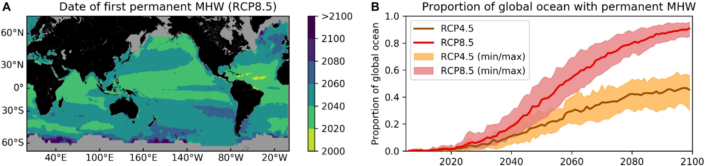
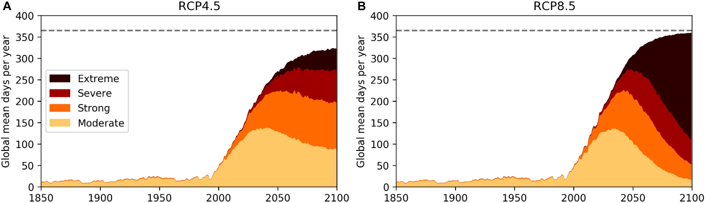
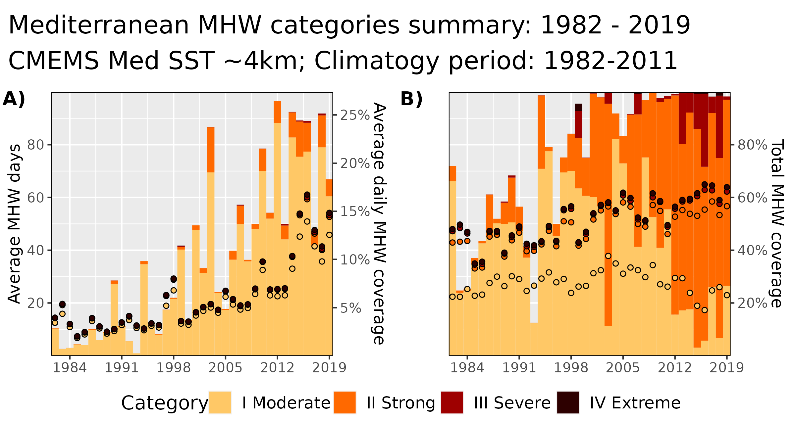
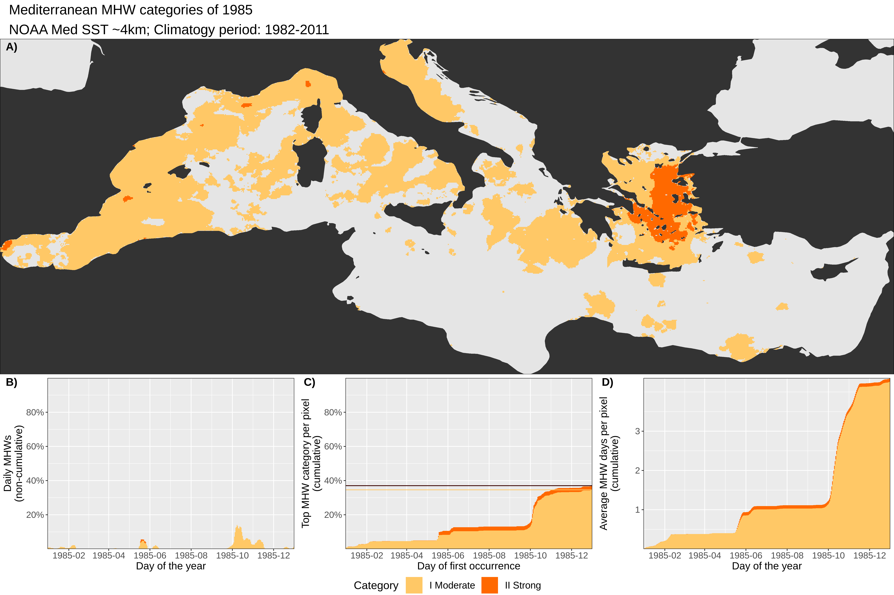
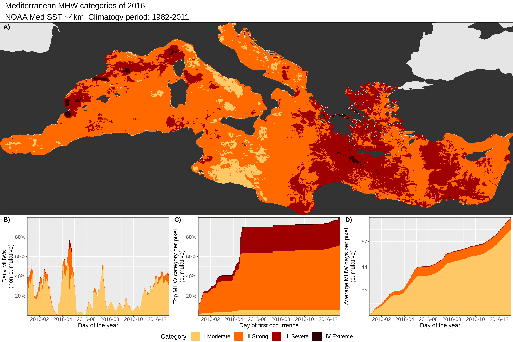
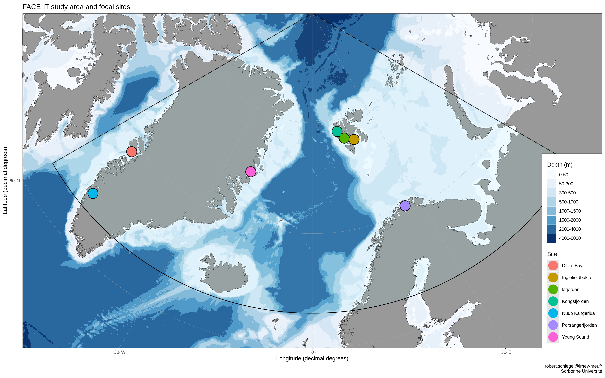
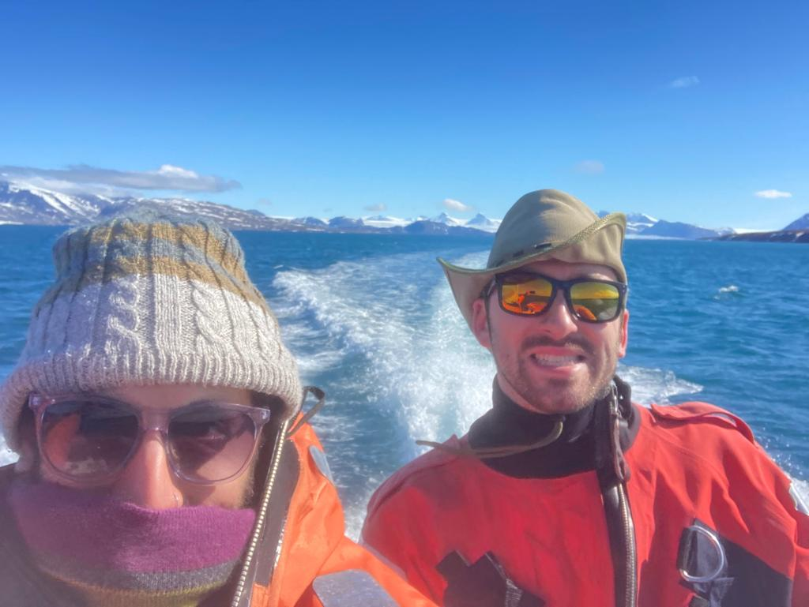
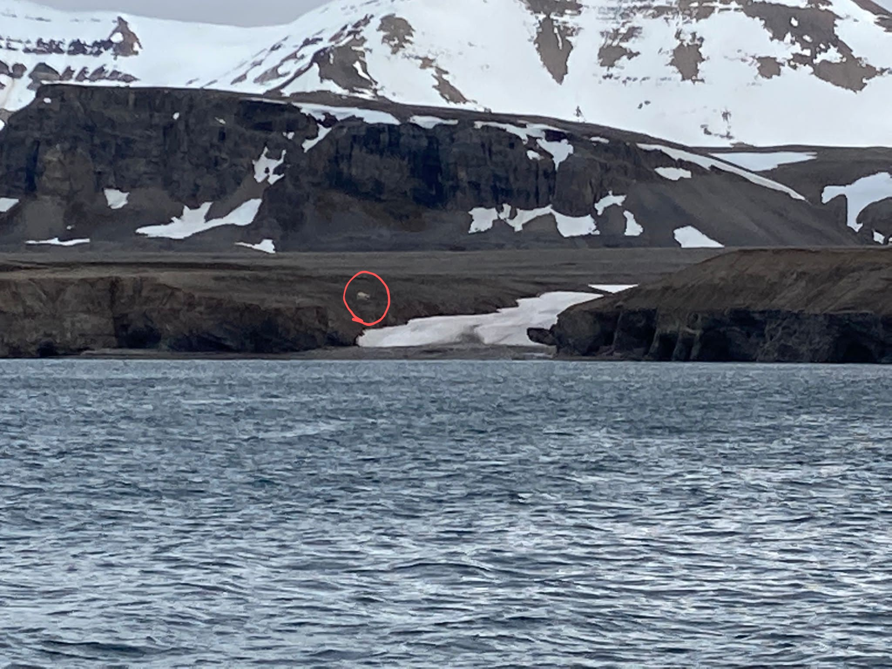

The Road to Marine Heatwaves
Robert W Schlegel
2022-07-01
Last updated: 2022-11-28
Checks: 2 0
Knit directory: WP1/
This reproducible R Markdown analysis was created with workflowr (version 1.7.0). The Checks tab describes the reproducibility checks that were applied when the results were created. The Past versions tab lists the development history.
Great! Since the R Markdown file has been committed to the Git repository, you know the exact version of the code that produced these results.
Great! You are using Git for version control. Tracking code development and connecting the code version to the results is critical for reproducibility.
The results in this page were generated with repository version d966b9a. See the Past versions tab to see a history of the changes made to the R Markdown and HTML files.
Note that you need to be careful to ensure that all relevant files for
the analysis have been committed to Git prior to generating the results
(you can use wflow_publish or
wflow_git_commit). workflowr only checks the R Markdown
file, but you know if there are other scripts or data files that it
depends on. Below is the status of the Git repository when the results
were generated:
Ignored files:
Ignored: .Rhistory
Ignored: .Rproj.user/
Ignored: .httr-oauth
Ignored: data/analyses/clean_all.RData
Ignored: data/analyses/clean_all_clean.RData
Ignored: data/analyses/ice_4km_proc.RData
Ignored: data/sst_trom.RData
Ignored: metadata/pangaea_parameters.tab
Ignored: mhw-definition_1_orig.xcf
Ignored: poster/SSC_2021_landscape_files/paged-0.15/
Ignored: shiny/kongCTD/.httr-oauth
Ignored: shiny/kongCTD/data/data_base.Rds
Ignored: shiny/test_data/
Note that any generated files, e.g. HTML, png, CSS, etc., are not included in this status report because it is ok for generated content to have uncommitted changes.
These are the previous versions of the repository in which changes were
made to the R Markdown (analysis/update_2022.Rmd) and HTML
(docs/update_2022.html) files. If you’ve configured a
remote Git repository (see ?wflow_git_remote), click on the
hyperlinks in the table below to view the files as they were in that
past version.
| File | Version | Author | Date | Message |
|---|---|---|---|---|
| Rmd | edc4e6a | Robert | 2022-07-01 | IMEV Postdoc talk |
| html | edc4e6a | Robert | 2022-07-01 | IMEV Postdoc talk |
Myself
Bachelor’s in psychology
“Effect of abnormally small troop size on aggressive and prosocial behavior in patas monkeys, Erythrocebus patas”
Wikipedia
Diving Instructor
- Worked throughout Asia and Africa
agoda
Master’s degree
- “The effects of the Cold Ridge variability on small pelagic transition and retention from the West coast to the South coast of South Africa”

Henry Jager
PhD
- “Coastal marine heatwaves: Understanding extreme forces”

Postdoc
- “Drivers of Marine Heatwaves in the Northwest Atlantic: the role of air-sea interaction during onset and decline”
Marine heatwaves (MHWs)
What are they?
- “A prolonged discrete anomalously warm water event that can be described by its duration, intensity, rate of evolution, and spatial extent.” (Hobday et al., 2016)
- Temperature at a location exceeds the 90th percentile for a given calendar day, for 5+ days, with no more than a 2 day gap
Why should we care?
- MHWs are increasing in duration and intensity globally (Oliver et al., 2018)
- We already know of many MHWs that have had dire consequences
- These events provide snapshots of the future ocean
 (Oliver et al., 2019)
 (Oliver et al., 2019)
Detecting MHWs
Time series
Day-of-year
11-day
31-day
TS+clim
Events
Quantifying MHWs
Single
Anatomy
Categories
Global
Global

Med

1985
Global

Med

2016
Global

Med

Resources for MHWs
- International Working Group
marineheatwaves.org
- TMedNet
t-mednet.org
- Programming languages
- Database
- Marine Heatwave Tracker: (http://www.marineheatwaves.org/tracker)
- Download MHW results: climatologies, event metrics, and categories
FACE-IT
Objectives
FACE-IT
“The overarching objective of FACE-IT is to enable adaptive co-management of social-ecological fjord systems in the Arctic in the face of rapid cryosphere and biodiversity changes.”
Work Package (WP) 1
- Compile data on key potential drivers of changes in coastal biodiversity
- Make the project data openly accessible
Study sites

Field work

Wild life

Acknowledgements